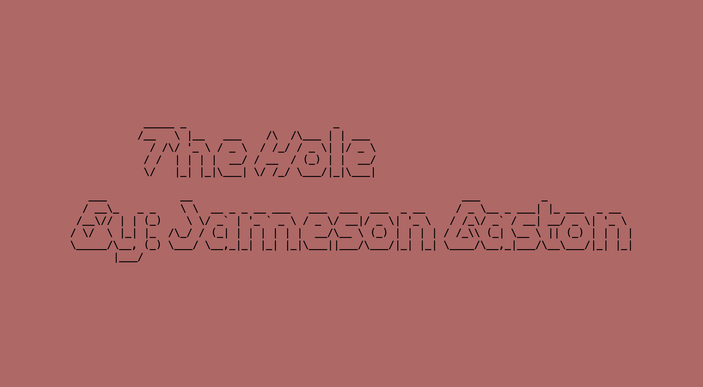

The Hole

"The Hole" is an interactive, web-based choose-your-own-adventure narrative that explores themes of mystery, decision-making, and spatial exploration. The project centers on a protagonist named Riley who ventures into a hidden forest path and descends into an intricate subterranean cave system. Through a branching web of HTML pages, users navigate subterranean tunnels, encounter cryptic statues, and make critical navigational choices that lead to distinct outcomes, ranging from perilous dead ends to a successful escape into the sunlight.
The piece is built using HTML, CSS, and plain text, featuring minimalist styling with custom color-coded environments and ASCII art graphics.